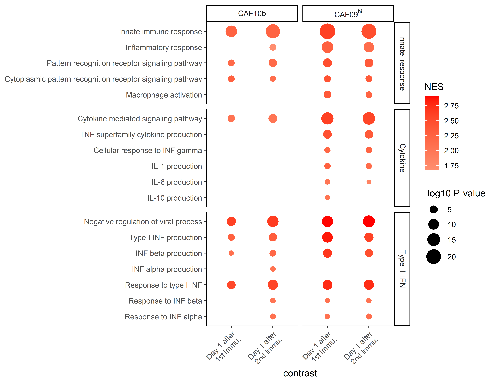

library(dplyr)
library(tidybulk)
library(fgsea)
library(purrr)
library(ggplot2)Vacc vs. Pre pathway enrichment
Load packages and data
Differential expressed genes (DEG) list
DEG <- readRDS("../data/DElist/DGE_immu_vs_pre.rds")
str(DEG, max.level = 2)List of 2
$ H107_CAF09c :List of 2
..$ immu1_vs_pre:Formal class 'DESeqResults' [package "DESeq2"] with 7 slots
..$ immu2_vs_pre:Formal class 'DESeqResults' [package "DESeq2"] with 7 slots
$ H107_CAF04_CpG:List of 2
..$ immu1_vs_pre:Formal class 'DESeqResults' [package "DESeq2"] with 7 slots
..$ immu2_vs_pre:Formal class 'DESeqResults' [package "DESeq2"] with 7 slotsGene set
We used the following gene sets:
CP:REACTOME (Reactome Pathways): 1615 pathways
GO:BP (Gene Ontology Biological Process): 7658 pathways
GO:MF (Gene Ontology Molecular Function): 1738 pathways
These gene sets are highly redundant. Because GO:BP is the most comprehensive one (7658 pathways). Thus, we only used GO:BP (Gene ontology biological process) in the publication. The authors are welcome to explore the results from Reactome or Gene ontology molecular functions.
gs <-
tibble(gs_name = c("CP:REACTOME",
"GO:BP",
"GO:MF")) %>%
mutate(gs_list = purrr::map(gs_name, function(subcat){
gs_df <- msigdbr::msigdbr(species = "Homo sapiens",
subcategory = subcat) %>%
group_by(gs_name) %>% tidyr::nest() %>%
mutate(gene_id = purrr::map(data, ~ .x %>% pull(gene_symbol))) %>% select(-data)
gs_list <- gs_df$gene_id
names(gs_list) <- gs_df$gs_name
return(gs_list)
}))Pathway enrichment by fgsea
I used functional programming (purrr::map) below.
design <-
tidyr::expand_grid(
gs_name = gs$gs_name,
vacc = names(DEG),
contrast = c("immu1_vs_pre", "immu2_vs_pre")
)
result <-
design %>%
mutate(
gs = map(gs_name, function(x){
gs <- gs[gs$gs_name == x, ]$gs_list[[1]]
return(gs)
}),
DEG = map2(vacc, contrast,
~ DEG[[.x]][[.y]] %>%
as_tibble(rownames = "gene_name") %>%
filter(padj < 0.05) %>%
select(gene_name, log2FoldChange) %>%
tibble::deframe()),
pathway_enrichment =
map2(gs, DEG, ~ fgsea(pathways = .x, stats = .y) %>%
as_tibble() %>%
filter(padj < 0.05) %>%
arrange(-NES))
)
saveRDS(result, "../data/pathway_enrichment/GSEA_enrichment.rds")
# result <- readRDS("../data/pathway_enrichment/GSEA_enrichment.rds")
gobp_enrichment <-
result %>% filter(gs_name == "GO:BP") %>% pull(pathway_enrichment)
names(gobp_enrichment) <-
result %>% filter(gs_name == "GO:BP") %>%
mutate(name = paste(vacc, contrast, sep = "_")) %>%
pull(name)
openxlsx::write.xlsx(gobp_enrichment,
file = "../data/pathway_enrichment/GSEA_enrichment_gobp.xlsx")- Pros and Cons:
- GO:BP: comprehensive, but a lot of redundancy.
- For example, the top 10 pathways of H107_CAF09c immu1_vs_pre are:
- “GOBP_DEFENSE_RESPONSE_TO_SYMBIONT”
- “GOBP_NEGATIVE_REGULATION_OF_VIRAL_PROCESS”
- “GOBP_TYPE_I_INTERFERON_PRODUCTION”
- “GOBP_RESPONSE_TO_VIRUS”
- “GOBP_REGULATION_OF_VIRAL_PROCESS”
- “GOBP_RESPONSE_TO_TYPE_I_INTERFERON”
- “GOBP_POSITIVE_REGULATION_OF_TYPE_I_INTERFERON_PRODUCTION”
- “GOBP_NEGATIVE_REGULATION_OF_VIRAL_GENOME_REPLICATION”
- “GOBP_INTERFERON_BETA_PRODUCTION”
- “GOBP_CYTOKINE_MEDIATED_SIGNALING_PATHWAY”
- No of enriched pathways:
- GO:BP
- H107_CAF09c
- immu1_vs_pre: 313
- immu2_vs_pre: 232
- H107_CAF04_CpG
- immu1_vs_pre: 68
- immu2_vs_pre: 95
- H107_CAF09c
- GO:BP
pathway_list <-
readxl::read_excel("../data/gene_set.xlsx") %>%
dplyr::rename(pathway = GO_term) %>%
mutate(pathway_display = factor(pathway_display,
levels = rev(pathway_display)),
theme = factor(theme, levels = c("Innate response",
"Cytokine",
"Type I IFN"),
labels = c("Innate~~response",
"Cytokine",
"Type~~I~~IFN")))t_bubble <-
result %>%
dplyr::select(gs_name:contrast, pathway_enrichment) %>%
unnest(cols = "pathway_enrichment") %>%
inner_join(pathway_list) %>%
mutate(`-log10 P-value` = -log10(padj),
contrast = case_when(
contrast == "immu1_vs_pre" ~ "Day 1 after\n1st immu.",
contrast == "immu2_vs_pre" ~ "Day 1 after\n2nd immu."
),
vacc = case_when(
vacc == "H107_CAF04_CpG" ~ "CAF10b",
vacc == "H107_CAF09c" ~ "CAF09hi"
),
vacc = factor(vacc, levels = c("CAF10b", "CAF09hi"),
labels = c("CAF10b", "CAF09^hi")))Joining with `by = join_by(pathway)`g_bubble <-
t_bubble %>%
ggplot(aes(x = contrast, y = pathway_display, color = NES, size = `-log10 P-value`)) +
geom_point() +
facet_grid(theme ~ vacc, scales = "free", space = "free", labeller = label_parsed) +
scale_size_area(max_size = 8) +
scale_color_gradient2(low="blue", mid = "white", high="red") +
theme_classic() +
theme(axis.text.x = element_text(angle = 45, hjust = 1)) +
labs(y = NULL)
ggsave("../data/figure/gsea_bubble.png", g_bubble,
height = 6.2, width = 8, dpi = 600)Bubble plot
